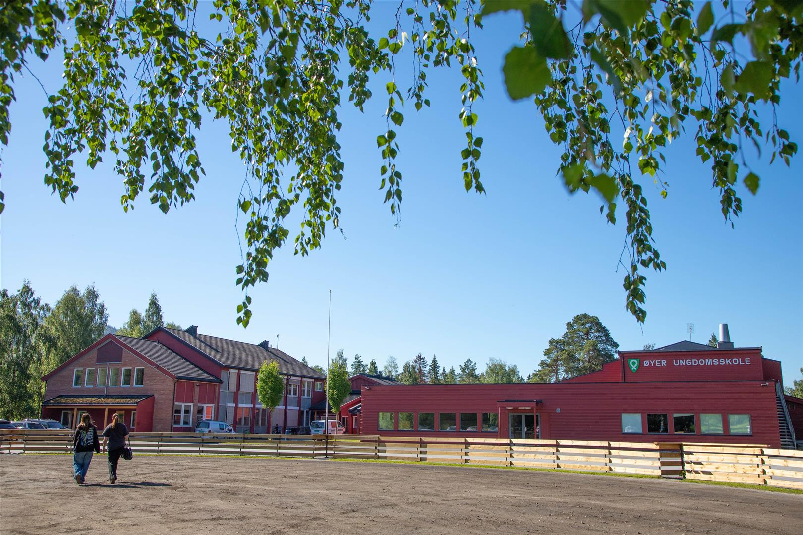

Øyer ungdomsskole ligger i nær beliggenhet av Hafjell alpintsenter, og ligger sør for Øyer sentrum. Skolens personale består av pedagoger, fagarbeidere og vernepleiere. De er fordelt over tre årskull, som tilsvarer klassetrinnene 8., 9. og 10. klasse, tilsammen 160 elever.
Lenke til Øyer ungdomsskole 